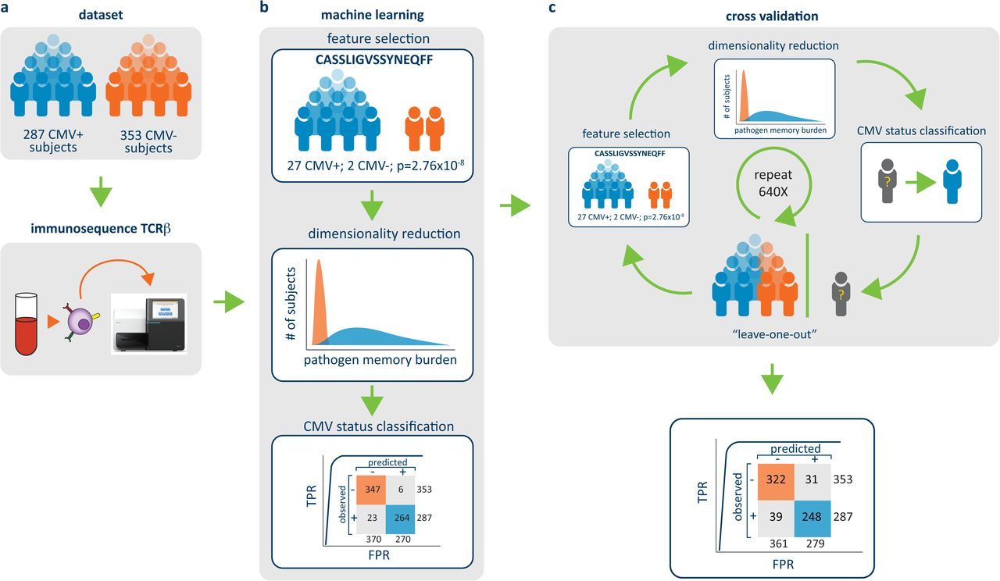
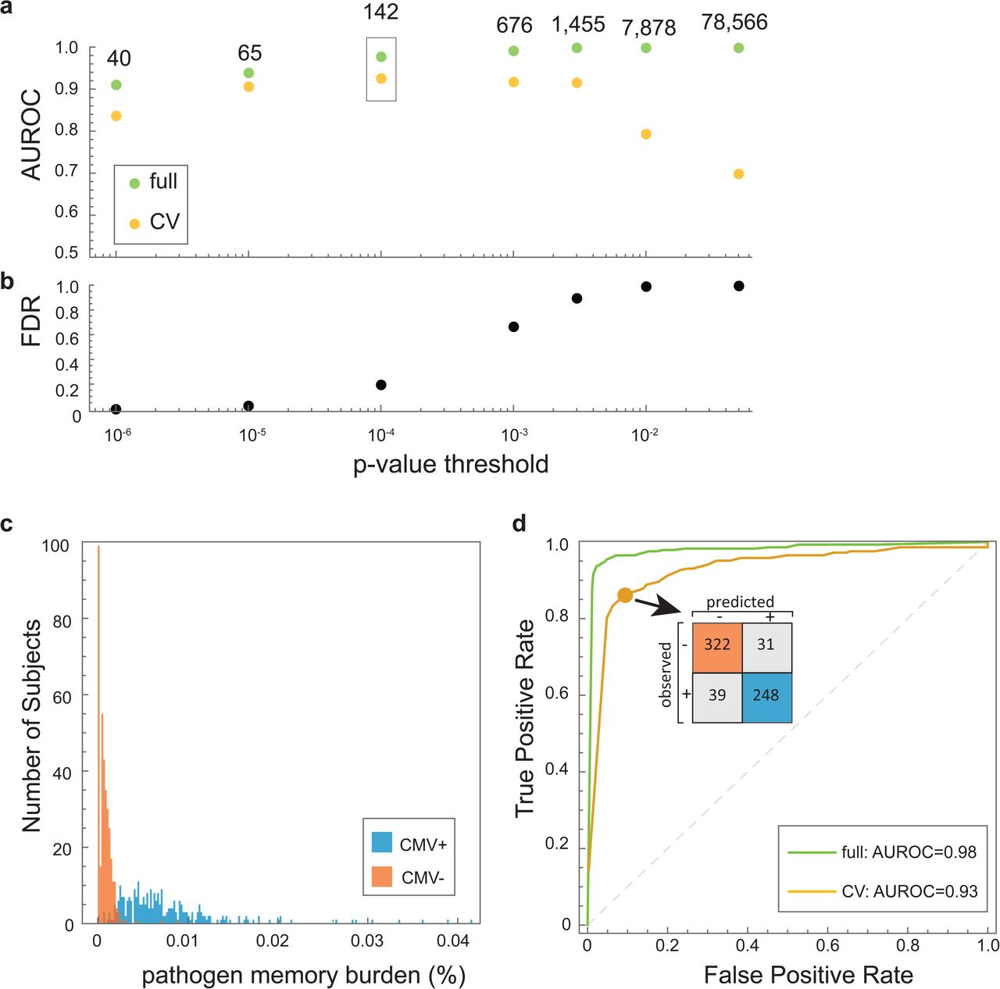
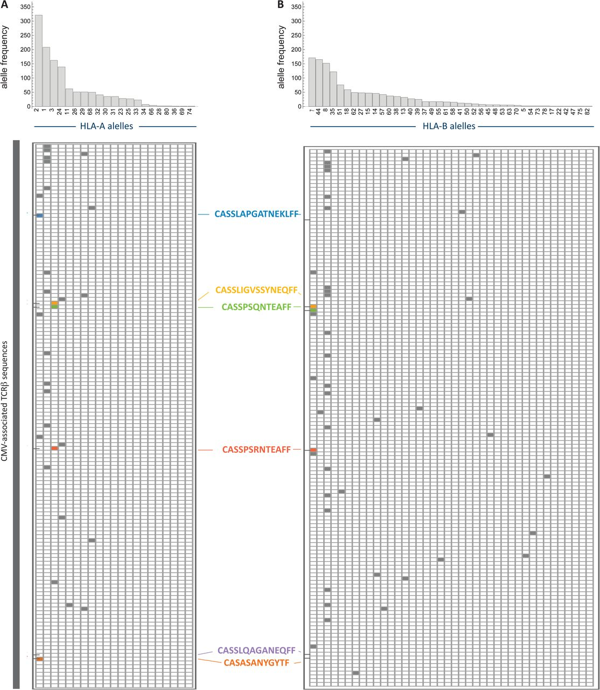

The Double-Edged Sword: Host Immunology, HLA Diversity, and Autoimmune Disease
- The Numbers Puzzle: Humans inherit only ~20,000 protein-coding genes, yet our body must recognize trillions of constantly mutating viruses and bacteria.
- The Genetic Solution: Developing immune cells deliberately cut, shuffle, and add random letters to their own DNA to build over $10^{15}$ unique immune sensors.
- The Blood Memory Log: Because victorious immune cells multiply and stay in our blood for decades, sequencing a drop of blood reveals a permanent record of past infections.
- The Autoimmune Price: The same sensitive machinery that spots hidden viruses can accidentally lock onto our own healthy tissues—causing Type 1 Diabetes, Celiac disease, and fatal drug allergies.
Immunology 101: The Three Lines of Defense (Innate, B Cells, and T Cells)
- 1. Innate Immunity (Hardwired First Responders): Macrophages and dendritic cells use fixed, inherited sensors (Toll-Like Receptors / TLRs) to spot microbes in minutes, release inflammatory cytokines (TNF-$\alpha$, IL-6), and chop up invaders to wake up adaptive cells.
- 2. Adaptive B Cells (Outside-the-Cell Antibodies): B cells shuffle their DNA (V(D)J) and fine-tune it (somatic hypermutation) to secrete Y-shaped Antibodies that lock directly onto the 3D outside surface of whole viruses floating in blood.
- 3. Adaptive T Cells (Inside-the-Cell Inspectors): Once a virus hides inside a cell, antibodies cannot reach it; T cells inspect chopped protein strips (peptides) on HLA trays to kill infected cells (CD8+) or command B cells (CD4+).
- Why All Three Matter in Autoimmunity: In Lupus and Arthritis, innate cells release TNF-$\alpha$, Helper T cells give the false alarm, and B cells pump out tissue-destroying autoantibodies!
Immunology 101: How T Cells Spot Viruses Hiding Inside Cells
- Why Antibodies Aren't Enough: Antibodies float in the blood outside cells. Once a virus slips inside a human cell, floating antibodies are completely blind to it.
- Player 1 — The Peptide (Protein Strip): Every cell in your body constantly chops up samples of its internal proteins into short 8–10 amino acid strips called peptides.
- Player 2 — The HLA Molecule (The Display Tray): HLA (Human Leukocyte Antigen) proteins act like molecular serving trays that carry those chopped peptides up to the cell surface for inspection.
- Player 3 — The T-Cell Receptor / TCR (The Scanner): Patrolling T cells use their TCR to touch the HLA tray: if the peptide is human ("Self"), the cell is spared; if viral ("Foreign"), the T cell destroys the infected cell.
Three Clinical Mysteries We Will Solve Today
- The Question: How can a human genome with only 20,000 genes build over $10^{15}$ different T-Cell Receptor (TCR) scanners?
- The Mechanism: Developing T cells use molecular scissors (RAG1/2) and a random letter generator (TdT) to mutate their own DNA.
- Clinical Payoff: We can sequence a patient's blood T cells to read their lifelong history of viral infections.
- The Question: Why didn't evolution give every human the exact same "perfect" HLA display tray?
- The Mechanism: Humanity carries over 4,800 different versions of HLA-B so no single mutating virus can hide from our entire species.
- Clinical Payoff: Each HLA version has uniquely shaped pockets that only hold peptides with matching chemical "tent pegs."
- The Question: Why do T cells suddenly attack insulin-making cells in Type 1 Diabetes or the gut in Celiac Disease?
- The Mechanism: An electrical charge swap inside an HLA tray—or a small drug wedged into the groove—causes normal human proteins to trigger an attack.
- Clinical Payoff: Engineered antibodies (-umab) and CAR-T cell reboots can turn off the attack.
Two Steps to Build a Receptor: Shuffling vs. Customizing
- Why T Cells Edit Their DNA: Nearly every cell in your body keeps an identical copy of your inherited DNA, but developing T cells permanently cut and splice their receptor genes (somatic recombination).
- Step 1 — Combinatorial Diversity ("Shuffling the Deck"): Each T cell randomly picks one Variable (V), one Diversity (D), and one Joining (J) segment, creating $\sim 4.1 \times 10^6$ combinations.
- Step 2 — Junctional Diversity ("Customizing the Seam"): Special enzymes chew back and insert random DNA letters right at the V-D-J joints, boosting total diversity past $10^{15}$ unique receptors.
The Cutting Machine: RAG1/2 Scissors & Hairpin Loops
- 1. The 12/23 Spacer Plugs: Every V, D, and J piece has a DNA "plug" with a 12-bp or 23-bp spacer. A 12-bp plug can only join a 23-bp plug, preventing illegal $V \rightarrow V$ shortcuts.
- 2. RAG1/2 Molecular Scissors: The RAG1/RAG2 enzyme complex recognizes paired plugs, cuts the DNA, and seals each cut end into a closed DNA hairpin loop.
- 3. Artemis Loop Opener: The Artemis enzyme snips open the closed hairpin loop slightly off-center, creating an exposed single-stranded DNA tail at the seam.
TdT Polymerase: The Cell's Random DNA Letter Generator
- Normal DNA Polymerase (Copy Machine): Requires an existing DNA template strand to copy bases faithfully during cell division.
- TdT Enzyme (Random Letter Generator): Terminal deoxynucleotidyl transferase (TdT) works without a template, grabbing free A, C, G, and T bases at random and gluing them onto the cut DNA ends (N-nucleotides).
- Molecular Erasers (Exonucleases): At the same time, trimming enzymes chew away a few original bases from the V, D, and J edges before the seam is sealed.
Three Pairs of Molecular Fingers: Why CDR3 Is the Bullseye
Spot Check 1: Somatic V(D)J Recombination & TdT Diversity
Shuffling inherited V, D, and J segments ("shuffling the deck") creates fewer than 107 receptor combinations. Which molecular mechanism creates the >1015 unique sequences concentrated in the center CDR3 finger?
- Open Canvas Quizzes: Navigate to Course 178614 → Quizzes on your phone or laptop.
- Select Assessment: Click on Lecture 8 Spot Check 1.
- Enter Passcode: Type
RECOMB-26-TDTto unlock your attempt. - Scoring Policy: 1.0 Point possible • 2 allowed attempts • Highest score kept.
How to Count Millions of T Cells: Multiplex PCR & Calibration
- Why Multiplex PCR Is Needed: Because T cells can pick any of 60 $V_\beta$ and 13 $J_\beta$ pieces, scientists mix 73 PCR primers in one tube (multiplex PCR) to copy every CDR3 loop in a blood sample.
- The "Greedy Primer" Bias: Left uncalibrated, some primers bind DNA more tightly and copy 10× faster, making rare T cells look artificially common.
- The Synthetic Control Solution: Emerson's team tested primers on a 1:1 synthetic control mix of all V–J pairs and adjusted concentrations until every piece copied at the exact same rate.

Private vs. Public TCRs: Lottery Tickets vs. Easy Rolls
- Private TCRs ("Lottery Tickets"): When TdT inserts 10–15 random DNA letters into a seam, that sequence is so rare ($P_{\text{gen}} < 10^{-14}$) that it exists in only one person on Earth.
- Public TCRs ("Easy Dice Rolls"): When V, D, and J segments join cleanly with zero or 1 TdT insertion, the sequence has a high generation probability ($P_{\text{gen}} > 10^{-6}$).
- Made Daily in Everyone: Because everyone inherits the same V, D, and J menu, these "easy-to-build" receptors are generated thousands of times every day inside nearly every human thymus.
Convergent Recombination: Different DNA Spellings, Same Protein Scanner
- Genetic Synonyms (Codon Degeneracy): Multiple 3-letter DNA codons encode the exact same amino acid (for example, DNA
TGTandTGCboth build CysteineC). - Convergent Recombination: Because of synonymous codons, different V(D)J DNA splices in unrelated people converge onto the exact same CDR3 amino acid sequence.
- Viral Clonal Expansion: Before infection, a public T cell sits quietly at 1 copy; when CMV infects the host, that T cell recognizes the virus and multiplies 10,000-fold into a massive memory clone.
Avoiding the Overfitting Trap: Why 142 TCRs Beat 78,566

• Cross-Validation (Green) = "Blind Final Exam" (new patients).
• AUROC Score:
0.50 = random coin flip; 1.00 = perfect test.
1.00 on the practice exam, but crashes to 0.70 on new patients because the computer memorized private TCR noise (overfitting).
Pathogen Memory Burden (Mi): One Number to Diagnose Exposure
Once Emerson et al. identified the 142 public CMV TCRs, they scored each patient ($i$) by calculating a simple fraction called the Pathogen Memory Burden ($M_i$):
- Uninfected (CMV−) Patients: Almost none of their T cells match the 142-clone checklist ($M_i < 0.001\%$, or fewer than 1 in 100,000 cells).
- Infected (CMV+) Patients: Viral clonal expansion boosts CMV memory T cells up to $0.04\%$ of all blood T cells (40× higher!).
Grading the Blood Test: The 640-Patient Confusion Matrix
| True Status | TCR Test Says CMV+ | TCR Test Says CMV− | Row Total |
|---|---|---|---|
| Truly Infected (CMV+) | 248 True Positive (TP) |
39 False Negative (FN) |
287 Infected |
| Truly Uninfected (CMV−) | 31 False Positive (FP) |
322 True Negative (TN) |
353 Healthy |
Green boxes (248 + 322 = 570 patients) represent correct diagnoses; Red boxes (39 + 31 = 70 patients) represent diagnostic errors.
- 1. Sensitivity (Catching the Sick): Out of 287 truly infected patients, how many did we catch?
TP / (TP + FN) = 248 / 287 = 86.4% - 2. Specificity (Clearing the Healthy): Out of 353 uninfected patients, how many did we clear?
TN / (TN + FP) = 322 / 353 = 91.2% - 3. Overall Accuracy (All Correct Calls):
(248 + 322) / 640 = 570 / 640 = 89.1% - 4. Diagnostic Odds Ratio (Signal Strength):
(TP × TN) / (FP × FN) = (248 × 322) / (31 × 39) = 66.1
Two Types of Display Trays: Class I (Shoebox) vs. Class II (Hot Dog Bun)
| Feature | HLA Class I ("Shoebox") | HLA Class II ("Hot Dog Bun") |
|---|---|---|
| Human Genes | HLA-A, HLA-B, HLA-C |
HLA-DP, HLA-DQ, HLA-DR |
| Where Found? | All nucleated body cells | Professional immune cells |
| Tray Ends | Pinched CLOSED at both ends | OPEN at both ends |
| Peptide Size | Short: 8–10 amino acids | Long: 13–25 amino acids |
| What It Shows | Inside threats (viruses) | Outside threats (bacteria/food) |
| Who Scans It? | CD8+ Killer T cells (destroy cell) | CD4+ Helper T cells (coordinate help) |
Why Humans Have 10,000+ HLA Versions: Balancing Selection
- The Most Diverse Spot in Our DNA: Chromosome 6p21.3 holds the HLA gene cluster, with over 4,800 different HLA-B alleles (gene versions) across humanity.
- 1. The Two-Tray Advantage (Heterozygote Advantage): A person who inherits two different versions of HLA-A, -B, and -C from their parents has 6 distinct Class I trays instead of 3, displaying twice as many viral pieces.
- 2. The Rare-Tray Advantage (Frequency-Dependent Selection): Viruses evolve to hide from common HLA trays; people carrying rare HLA alleles can still trap the virus and survive epidemics.
Tent Pegs & Sockets: How Peptides Lock Into HLA Anchor Pockets
MHC Restriction: Reading Your Parent's HLA Genes from T Cells
- The Rule of MHC Restriction: A T cell never sees a naked virus; it only recognizes a viral peptide sitting inside a specific host HLA tray (e.g.,
HLA-A*02:01). - Step 1 (Forward Biology): Only patients who inherited the
HLA-A*02:01tray can display CMV Peptide X → so Public T Cell #14 expands only inHLA-A*02:01carriers. - Step 2 (Reverse Genotyping): Emerson flipped the question: if Public T Cell #14 is expanded in your blood, you must carry the
HLA-A*02:01gene (>90% accuracy across 57 restricted TCRs!).

Spot Check 2: HLA Display Trays & MHC Restriction
In Emerson et al., 57 of the 142 CMV-diagnostic TCRβ clones expanded only in patients carrying specific HLA-A or HLA-B alleles. Why does a blood test for a diverse human population require a 142-TCR panel rather than a single universal TCR biomarker?
- Open Canvas Quizzes: Go to Course 178614 → Quizzes on your device.
- Select Assessment: Click on Lecture 8 Spot Check 2.
- Enter Passcode: Enter
MHC-POCKET-26. - Grading Policy: 1.0 Point possible • 2 allowed attempts • Highest score kept.
T-Cell Boot Camp: How the Thymus Deletes Self-Attacking Cells
- The "Sample Platter" (AIRE Protein): Inside the thymus, a gene regulator called AIRE forces thymic cells to manufacture small samples of proteins from every organ (like insulin from the pancreas and myelin from nerves).
- Firing Dangerous Rookies (Negative Selection): Any rookie T cell whose receptor grabs a human protein tightly is ordered to self-destruct (apoptosis).
- Why Weak Self-Reactors Escape: Rookie T cells that bind human proteins weakly pass the test and enter the bloodstream.
- The Immune Police (Regulatory T Cells / Tregs): Special peacekeeper T cells patrol the blood to keep these weak self-reactive escapees handcuffed.
Three Ways an HLA Display Tray Triggers an Autoimmune Attack
HLA-DQB1 (non-Asp57)- What Changes? The HLA pocket itself has an inherited DNA change (
non-Asp57). - Physical Effect: Pocket P9 loses its negative shield and becomes a positive (+) magnet.
- What Locks In? Negatively charged (−) human insulin peptides from the pancreas.
HLA-DQ2.5 / DQ8- What Changes? The food peptide is chemically edited by your own gut enzyme (tTG2).
- Physical Effect: Neutral wheat gluten (0) is converted into a negatively charged (−) peptide.
- What Locks In? Charged gluten snaps into positive (+) pockets of
HLA-DQ2.5in the gut.
HLA-B*57:01- What Changes? An HIV drug (abacavir) sits inside Pocket F like a pebble in a shoe.
- Physical Effect: The drug reshapes the socket so normal self-peptides no longer fit.
- What Locks In? Unfamiliar human peptides that T cells mistake for a foreign virus!
Type 1 Diabetes: How One Missing Charge Turns HLA Into an Insulin Magnet
- Safe HLA Tray (
Asp57= Negative −): In protective people, position 57 has a negative Aspartic Acid (−) that pairs up with positive Arginine-79 (+) (salt bridge), keeping Pocket P9 neutral and closed. - Diabetes-Risk Tray (
non-Asp57= Neutral 0): In risk alleles (HLA-DQB1*02:01/*03:02), position 57 is neutral (Alanine, Valine, or Serine), leaving Arginine-79 (+) completely exposed! - The Positive (+) Magnet: Exposed
Arg79 (+)turns Pocket P9 into a positive magnet that grabs negatively charged (−) insulin peptides (InsB9–23). - Pancreas Destruction: T cells see the trapped insulin peptide and destroy the insulin-making beta cells of the pancreas.
HLA-DQB1 accounts for over 50% of all inherited risk for childhood Type 1 Diabetes!
Celiac Disease: A Gut Enzyme Adds a Negative (−) Charge to Gluten
- Step 1 — Neutral Gluten (Charge = 0): Wheat gluten peptides are full of neutral Glutamine (Q, 0 charge), which cannot stick into the positive (+) pockets of
HLA-DQ2.5. - Step 2 — The Gut Enzyme Edit (tTG2 Deamidation): A human gut enzyme called tTG2 chemically converts neutral Glutamine (
Q = 0) into negatively charged Glutamic Acid (E = -). - Step 3 — Opposite Charges Lock (+ Grabs −): The newly negative (−) gluten peptide snaps tightly into the positive (+) P4, P6, and P9 pockets of
HLA-DQ2.5. - Step 4 — Flattened Gut Lining (Villous Atrophy): CD4+ T cells attack the intestinal wall, flattening the nutrient-absorbing fingers (villi) of the gut.
HLA-DQ2.5 or HLA-DQ8; if a patient lacks both genes, Celiac disease is >99% ruled out!
Abacavir & HLA-B*57:01: The "Pebble in the Pocket" Drug Allergy
HLA-B*57:01 before prescribing abacavir reduced this fatal drug hypersensitivity from 8% to 0% worldwide!
Spot Check 3: How HLA Grooves Trigger Autoimmunity
How does the HIV medication abacavir trigger a life-threatening whole-body autoimmune reaction exclusively in patients who inherited the HLA-B*57:01 gene?
- Open Canvas Quizzes: Go to Course 178614 → Quizzes on your device.
- Select Assessment: Click on Lecture 8 Spot Check 3.
- Enter Passcode: Type
SCAR-HLA-5701. - Scoring Policy: 1.0 Point possible • 2 allowed attempts • Highest score kept.
In-Class Sprint: The Clinical Immunogenomics Board
-
Part 1 (Canvas Q1 • 1.0 Pt) — Autoimmune & Celiac HLA Audit:
• Patient A (4 yo): HomozygousHLA-DQB1*02:01 / *03:02(non-Asp57) with anti-insulin & anti-GAD65 autoantibodies. How does losing negative Asp57 turn Pocket P9 into a positive (+) magnet for insulin (Slide 23)?
• Patient B (28 yo): Gluten-free for 6 months (negative antibodies) and DNA test is negative for bothHLA-DQ2.5andHLA-DQ8. Why does this rule out Celiac disease (>99% NPV) without a biopsy (Slide 24)? -
Part 2 (Canvas Q2 • 2.0 Pts) — Mandatory Digital Proof-of-Work:
Query the live IPD-IMGT/HLA Database or Emerson Figure 3 (follow Steps 1–3 on the right) and upload your annotated screenshot file. -
Part 3 (Canvas Q3 • 1.0 Pt) — Pharmacogenomic Safety Guardrail:
• Patient C (34 yo HIV-1+): Baseline DNA screen comes back positive forHLA-B*57:01. Using the "Pebble in the Pocket" mechanism (Slide 25), why is abacavir banned for life and what safe alternative backbone is used?
| Patient Case | HLA Genotype Result | Groove / Pocket Mechanism | Clinical Action |
|---|---|---|---|
| Patient A (4 yo) | DQB1*02:01/*03:02 (non-Asp57) |
[ Solve in Q1 ] | Stage 1 T1D Monitoring |
| Patient B (28 yo) | DQ2.5(−) / DQ8(−) |
[ Solve in Q1 ] | Rule Out Celiac (>99% NPV) |
| Patient C (34 yo) | HLA-B*57:01 Positive |
[ Solve in Q3 ] | [ Solve in Q3 ] |
-
Step 1 (Open Live Resource): Open either the IPD-IMGT/HLA Database (ebi.ac.uk/ipd/imgt/hla/) and search allele
HLA-B*57:01, OR open Emerson et al. (Nature Genetics 2017) Figure 3 (Slide 17). -
Step 2 (Highlight Evidence): Take a screenshot and circle or highlight either the
HLA-B*57:01allele entry (Exons 2–3 groove region) OR one HLA-restricted public TCR row in Emerson Figure 3. -
Step 3 (Upload to Canvas): Upload your screenshot (
PNG,JPG, orPDF) directly into Question 2 of the Lecture 8 In-Class Sprint on Canvas.
How to Read Drug Names: Antibody Engineering from -omab to -umab
- 1. Mouse (-omab, 0% Human): The earliest monoclonal antibodies (-mab) were 100% mouse proteins; human immune systems attacked and destroyed the drug (anti-mouse reaction).
- 2. Chimeric (-ximab, ~65% Human): Engineers glued mouse target-grabbing tips onto a human stem (e.g., Rituximab, Infliximab).
- 3. Humanized (-zumab, >90% Human): Only the tiny mouse CDR fingers at the very tip were kept on a human antibody frame.
- 4. Fully Human (-umab, 100% Human): Built using human antibody genes so the body treats the drug as 100% native (e.g., Adalimumab / Humira).
-omab (0% human) to -umab (100% human) prevents patients from making antibodies against their own medication!
Targeted Biologics: Molecular Scalpels Replace Steroid Sledgehammers
| Where We Cut | What the Drug Does | Drug Name | Diseases Treated |
|---|---|---|---|
| 1. Block T-Cell Wake-Up | Blocks the second "wake-up handshake" (CD80/86) |
Abatacept (Orencia) | Rheumatoid Arthritis |
| 2. Mute Signal Megaphone | Blocks IL-12/IL-23 alarm signals between cells |
Ustekinumab (Stelara) | Psoriasis, Crohn's Disease |
| 3. Clear B-Cell Factory | Tags CD20+ B cells for removal before they make autoantibodies |
Rituximab (Rituxan) | Lupus, Multiple Sclerosis |
| 4. Sponge Up Joint Fire | Mops up TNF-α inflammation protein directly |
Adalimumab (Humira) | Arthritis, Ulcerative Colitis |
TNF-alpha), patients heal their joints or gut while keeping the rest of their immune system intact!
Pressing "Ctrl+Alt+Delete": CAR-T Cells Reboot the Immune System
Lecture 8 Master Cheat Sheet: From DNA Scissors to Immune Resets
| Topic | How It Works (Plain English) | Key Number / Metric | Disease / Risk | Clinical Fix |
|---|---|---|---|---|
| 1. Building TCRs (V-D-J + TdT) | RAG1/2 cuts DNA into hairpins; Artemis opens loop; TdT adds random letters at the CDR3 seam | >1015 unique scanners (vs 4.1M from shuffling) | Broken RAG1/2 causes fatal "Bubble Boy" SCID | Stem cell / gene therapy |
| 2. Blood Memory Log (Emerson) | Easy seams (high Pgen) + synonymous DNA codons (convergent recombination) build shared Public TCRs | 142 public TCRs (AUROC = 0.93); Memory Burden Mi | Detects hidden viral exposure (CMV) in blood | Antiviral therapy in transplant |
| 3. HLA Display Trays (6p21) | Class I ("Shoebox"): closed ends, 8–10 aa, CD8+ Killers. Class II ("Bun"): open ends, 13–25 aa, CD4+ Helpers |
>4,800 HLA-B alleles kept by balancing selection | MHC Restriction: T cell needs matching HLA tray | Reverse HLA typing from blood |
| 4. Type 1 Diabetes & Celiac | T1D: non-Asp57 leaves Pocket P9 positive (+), grabbing (−) insulin.Celiac: gut enzyme tTG2 makes gluten negative (−) |
>50% T1D genetic risk; >99% Celiac rule-out |
Pancreas islet destruction; flattened gut villi | Teplizumab (T1D); Gluten-free diet |
| 5. Abacavir Drug Allergy | HIV pill wedges into Pocket F of HLA-B*57:01 ("pebble in shoe"), forcing unfamiliar self-peptides onto tray |
Dropped allergy rate from 8% down to 0% | Fatal whole-body CD8+ hypersensitivity (SCAR) | Mandatory DNA test before Rx |
| 6. Biologics & CAR-T Reboot | Engineered antibodies from mouse (-omab) to 100% human (-umab); CD19 CAR-T wipes & reboots B cells |
0% mouse → 100% human; drug-free Lupus remission | Rheumatoid Arthritis, Crohn's, severe Lupus | Humira, Rituxan, CD19 CAR-T |
Summative Mastery Quiz & Preview of Lecture 9: Cancer Genomics
- Q1 (Slides 4–7): How RAG1/2 and TdT random letter insertions build >1015 CDR3 loops.
- Q2 (Slides 10–12): Why high-Pgen "easy rolls" and synonymous codons create public CMV TCRs.
- Q3 (Slides 15–17): HLA Class I ("closed shoebox") vs. Class II ("open hot dog bun") and P2/P9 tent pegs.
- Q4 (Slides 21–24): How
non-Asp57(T1D),tTG2(Celiac), and abacavir (HLA-B*57:01) trigger attacks. - Q5 (Slides 27–29): Decoding antibody drug names (
-omabto-umab) and CAR-T immune resets.
Cancer Genomics I: The Rogue Genome — Evolution, Mutational Signatures, and Hallmarks
- Cancer as Evolution Inside the Body: Driver mutations (gas pedals & broken brakes) vs. harmless passenger mutations.
- Mutational Crime Scenes: How UV sunlight, tobacco smoke, and faulty enzymes leave distinct 3-letter DNA scars.
- Midterm Project Official Launch: Teams of 2 permitted; AI and Non-AI tracks; browse topics at
midterm.html.